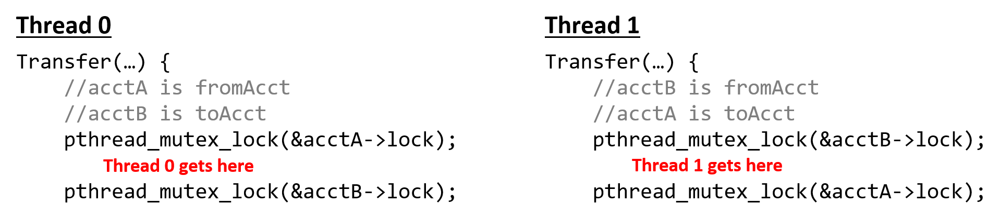

14.3.1. Loại trừ lẫn nhau (Mutual Exclusion)
Mutex là gì? Câu trả lời ở ngoài kia, nó đang tìm kiếm bạn, và nó sẽ tìm thấy bạn nếu bạn muốn.
~ Trinity giải thích về mutex cho Neo (Xin lỗi The Matrix)
Để khắc phục data race (tranh chấp dữ liệu), chúng ta sẽ sử dụng một cấu trúc đồng bộ hóa gọi là mutual exclusion lock (khóa loại trừ lẫn nhau), hay mutex.
Mutex là một loại synchronization primitive (nguyên thủy đồng bộ hóa) đảm bảo rằng tại bất kỳ thời điểm nào, chỉ một thread được phép vào và thực thi đoạn mã bên trong critical section (vùng tới hạn).
Trước khi sử dụng mutex, chương trình cần:
- Khai báo mutex trong vùng nhớ được chia sẻ giữa các thread (thường là biến toàn cục).
- Khởi tạo mutex trước khi các thread cần dùng (thường trong hàm
main).
Thư viện Pthreads định nghĩa kiểu pthread_mutex_t cho mutex.
Để khai báo một biến mutex, thêm dòng:
pthread_mutex_t mutex;
Để khởi tạo mutex, dùng hàm pthread_mutex_init, nhận vào địa chỉ của mutex và một cấu trúc thuộc tính (thường đặt là NULL):
pthread_mutex_init(&mutex, NULL);
Khi không còn cần mutex nữa (thường ở cuối hàm main, sau khi gọi pthread_join), chương trình nên giải phóng cấu trúc mutex bằng cách gọi pthread_mutex_destroy:
pthread_mutex_destroy(&mutex);
Mutex: Khóa và sẵn sàng
Trạng thái ban đầu của mutex là unlocked (mở khóa), nghĩa là bất kỳ thread nào cũng có thể sử dụng ngay.
Để vào critical section, một thread phải acquire (giành) được khóa.
Điều này được thực hiện bằng cách gọi hàm pthread_mutex_lock.
Sau khi một thread đã giữ khóa, không thread nào khác có thể vào critical section cho đến khi thread giữ khóa release (nhả) nó.
Nếu một thread khác gọi pthread_mutex_lock khi mutex đang bị khóa, thread đó sẽ block (chờ) cho đến khi mutex khả dụng.
Hãy nhớ rằng blocking nghĩa là thread sẽ không được lập lịch để sử dụng CPU cho đến khi điều kiện nó chờ (mutex khả dụng) trở thành đúng.
Khi một thread thoát khỏi critical section, nó phải gọi pthread_mutex_unlock để nhả mutex, cho phép thread khác sử dụng.
Như vậy, tại một thời điểm, tối đa chỉ có một thread giữ khóa và vào critical section, ngăn chặn nhiều thread cùng “tranh” đọc và cập nhật biến chia sẻ.
Sau khi đã khai báo và khởi tạo mutex, câu hỏi tiếp theo là đặt lệnh khóa và mở khóa ở đâu để đảm bảo critical section được bảo vệ tốt nhất.
Dưới đây là một thử nghiệm ban đầu khi bổ sung mutex vào hàm countElems
(Toàn bộ mã nguồn có thể tải từ countElems_p_v2.c):
pthread_mutex_t mutex; //global declaration of mutex, initialized in main()
/*parallel version of step 1 of CountSort algorithm (attempt 1 with mutexes):
* extracts arguments from args value
* calculates component of the array that thread is responsible for counting
* computes the frequency of all the elements in assigned component and stores
* the associated counts of each element in counts array
*/
void *countElems( void *args ) {
//extract arguments
//ommitted for brevity
int *array = myargs->ap;
long *counts = myargs->countp;
//assign work to the thread
long chunk = length / nthreads; //nominal chunk size
long start = myid * chunk;
long end = (myid + 1) * chunk;
long val;
if (myid == nthreads - 1) {
end = length;
}
long i;
//heart of the program
pthread_mutex_lock(&mutex); //acquire the mutex lock
for (i = start; i < end; i++) {
val = array[i];
counts[val] = counts[val] + 1;
}
pthread_mutex_unlock(&mutex); //release the mutex lock
return NULL;
}
Các lệnh khởi tạo và hủy mutex được đặt trong main, bao quanh phần tạo và join thread:
// trích từ hàm main():
pthread_mutex_init(&mutex, NULL); // khởi tạo mutex
for (t = 0; t < nthreads; t++) {
pthread_create(&thread_array[t], NULL, countElems, &thread_args[t]);
}
for (t = 0; t < nthreads; t++) {
pthread_join(thread_array[t], NULL);
}
pthread_mutex_destroy(&mutex); // hủy (giải phóng) mutex
Hãy biên dịch lại và chạy chương trình mới này với số lượng thread khác nhau:
$ ./countElems_p_v2 10000000 1 1
Counts array:
999170 1001044 999908 1000431 999998 1001479 999709 997250 1000804 1000207
$ ./countElems_p_v2 10000000 1 2
Counts array:
999170 1001044 999908 1000431 999998 1001479 999709 997250 1000804 1000207
$ ./countElems_p_v2 10000000 1 4
Counts array:
999170 1001044 999908 1000431 999998 1001479 999709 997250 1000804 1000207
Tuyệt vời — kết quả cuối cùng đã nhất quán bất kể số lượng thread!
Hãy nhớ rằng một mục tiêu quan trọng khác của multithreading là giảm thời gian chạy của chương trình khi số lượng thread tăng (tức là tăng tốc thực thi).
Hãy benchmark hiệu năng của hàm countElems.
Mặc dù có thể bạn muốn dùng lệnh time -p, nhưng hãy nhớ rằng time -p đo wall-clock time của toàn bộ chương trình (bao gồm cả phần sinh dữ liệu ngẫu nhiên), chứ không chỉ thời gian chạy của countElems.
Trong trường hợp này, tốt hơn là dùng system call gettimeofday, cho phép đo chính xác wall-clock time của một đoạn mã cụ thể.
Benchmark countElems trên 100 triệu phần tử cho kết quả:
$ ./countElems_p_v2 100000000 0 1
Time for Step 1 is 0.368126 s
$ ./countElems_p_v2 100000000 0 2
Time for Step 1 is 0.438357 s
$ ./countElems_p_v2 100000000 0 4
Time for Step 1 is 0.519913 s
Việc tăng số lượng thread lại khiến chương trình chạy chậm hơn! Điều này đi ngược lại mục tiêu sử dụng thread để làm chương trình nhanh hơn.
Để hiểu chuyện gì đang xảy ra, hãy xem vị trí đặt lock trong hàm countElems:
// trích đoạn code từ hàm countElems ở phần trước
// phần lõi của chương trình
pthread_mutex_lock(&mutex); // giành mutex lock
for (i = start; i < end; i++){
val = array[i];
counts[val] = counts[val] + 1;
}
pthread_mutex_unlock(&mutex); // nhả mutex lock
Trong ví dụ này, chúng ta đặt lock bao quanh toàn bộ vòng lặp for.
Mặc dù cách đặt này giải quyết vấn đề đúng đắn (correctness), nhưng lại rất tệ về mặt hiệu năng — critical section giờ bao trùm toàn bộ thân vòng lặp.
Đặt lock như vậy đảm bảo rằng chỉ một thread có thể thực thi vòng lặp tại một thời điểm, về cơ bản là tuần tự hóa chương trình!
The Mutex: Reloaded
Hãy thử một cách tiếp cận khác: đặt lệnh lock và unlock mutex bên trong mỗi vòng lặp:
/* phiên bản code đã chỉnh sửa của hàm countElems:
* lock được đặt BÊN TRONG vòng for!
*/
// phần lõi của chương trình
for (i = start; i < end; i++) {
val = array[i];
pthread_mutex_lock(&m); // giành mutex lock
counts[val] = counts[val] + 1;
pthread_mutex_unlock(&m); // nhả mutex lock
}
Thoạt nhìn, đây có vẻ là giải pháp tốt hơn vì mỗi thread có thể vào vòng lặp song song, chỉ tuần tự hóa khi chạm tới lock.
Critical section lúc này rất nhỏ, chỉ bao gồm dòng counts[val] = counts[val] + 1.
Trước tiên, hãy kiểm tra tính đúng đắn của phiên bản này:
$ ./countElems_p_v3 10000000 1 1
Counts array:
999170 1001044 999908 1000431 999998 1001479 999709 997250 1000804 1000207
$ ./countElems_p_v3 10000000 1 2
Counts array:
999170 1001044 999908 1000431 999998 1001479 999709 997250 1000804 1000207
$ ./countElems_p_v3 10000000 1 4
Counts array:
999170 1001044 999908 1000431 999998 1001479 999709 997250 1000804 1000207
Tốt — phiên bản này cũng cho kết quả nhất quán bất kể số lượng thread.
Bây giờ, hãy xem hiệu năng:
$ ./countElems_p_v3 100000000 0 1
Time for Step 1 is 1.92225 s
$ ./countElems_p_v3 100000000 0 2
Time for Step 1 is 10.9704 s
$ ./countElems_p_v3 100000000 0 4
Time for Step 1 is 9.13662 s
Chạy phiên bản này cho kết quả chậm hơn đáng kể!
Hóa ra, việc lock và unlock mutex là các thao tác tốn kém.
Hãy nhớ lại phần thảo luận về tối ưu hóa lời gọi hàm:
gọi một hàm lặp đi lặp lại (và không cần thiết) trong vòng lặp có thể là nguyên nhân chính gây chậm chương trình.
Trong cách dùng mutex trước đây, mỗi thread chỉ lock và unlock một lần.
Trong giải pháp hiện tại, mỗi thread lock và unlock n/t lần, trong đó:
- n là kích thước mảng
- t là số lượng thread
- n/t là số phần tử mảng được gán cho mỗi thread
Kết quả là chi phí của các thao tác mutex bổ sung làm chậm đáng kể việc thực thi vòng lặp.
The Mutex: Revisited
Ngoài việc bảo vệ critical section để đảm bảo tính đúng đắn, một giải pháp lý tưởng sẽ:
- Sử dụng lock và unlock ít nhất có thể.
- Giảm kích thước critical section xuống nhỏ nhất có thể.
Phiên bản đầu tiên đáp ứng yêu cầu (1), trong khi phiên bản thứ hai cố gắng đạt yêu cầu (2).
Thoạt nhìn, hai yêu cầu này có vẻ mâu thuẫn.
Liệu có cách nào để đạt được cả hai (và đồng thời tăng tốc chương trình) không?
Trong lần thử tiếp theo, mỗi thread sẽ duy trì một mảng đếm (counts array) cục bộ trên stack của nó.
Vì mảng này là local cho từng thread, thread có thể truy cập mà không cần lock — không có nguy cơ race condition trên dữ liệu không được chia sẻ.
Mỗi thread sẽ xử lý phần mảng được gán và điền vào mảng đếm cục bộ của mình.
Sau khi đếm xong tất cả giá trị trong phần dữ liệu của mình, mỗi thread sẽ:
- Lock mutex chia sẻ (vào critical section).
- Cộng giá trị từ mảng đếm cục bộ vào mảng
countschia sẻ. - Unlock mutex chia sẻ (thoát critical section).
Việc giới hạn mỗi thread chỉ cập nhật mảng counts chia sẻ một lần giúp giảm đáng kể tranh chấp trên biến chia sẻ và giảm thiểu các thao tác mutex tốn kém.
Dưới đây là phiên bản countElems đã chỉnh sửa.
Toàn bộ mã nguồn của chương trình cuối cùng này có thể xem tại
(countElems_p_v3.c):
/*parallel version of step 1 of CountSort algorithm (final attempt w/mutexes):
* extracts arguments from args value
* calculates component of the array that thread is responsible for counting
* computes the frequency of all the elements in assigned component and stores
* the associated counts of each element in counts array
*/
void *countElems( void *args ) {
//extract arguments
//ommitted for brevity
int *array = myargs->ap;
long *counts = myargs->countp;
//local declaration of counts array, initializes every element to zero.
long local_counts[MAX] = {0};
//assign work to the thread
long chunk = length / nthreads; //nominal chunk size
long start = myid * chunk;
long end = (myid + 1) * chunk;
long val;
if (myid == nthreads-1)
end = length;
long i;
//heart of the program
for (i = start; i < end; i++) {
val = array[i];
//updates local counts array
local_counts[val] = local_counts[val] + 1;
}
//update to global counts array
pthread_mutex_lock(&mutex); //acquire the mutex lock
for (i = 0; i < MAX; i++) {
counts[i] += local_counts[i];
}
pthread_mutex_unlock(&mutex); //release the mutex lock
return NULL;
}
Phiên bản này có một vài đặc điểm bổ sung:
-
Sự xuất hiện của
local_counts, một mảng cục bộ trong phạm vi của từng thread (tức là được cấp phát trên stack của thread đó). Giống nhưcounts,local_countschứaMAXphần tử, vớiMAXlà giá trị lớn nhất mà bất kỳ phần tử nào trong mảng đầu vào có thể có. -
Mỗi thread cập nhật
local_countstheo tốc độ riêng của nó, không có tranh chấp (contention) đối với biến chia sẻ. -
Chỉ một lần gọi
pthread_mutex_lockđược dùng để bảo vệ việc mỗi thread cập nhật mảngcountstoàn cục, và điều này chỉ diễn ra một lần ở cuối quá trình thực thi của thread.
Bằng cách này, chúng ta giảm thời gian mỗi thread phải ở trong critical section xuống chỉ còn việc cập nhật mảng counts chia sẻ.
Mặc dù tại một thời điểm chỉ một thread có thể vào critical section, nhưng thời gian mỗi thread ở đó tỷ lệ với MAX, chứ không phải n (độ dài mảng toàn cục).
Vì MAX nhỏ hơn rất nhiều so với n, chúng ta kỳ vọng sẽ thấy cải thiện về hiệu năng.
Bây giờ, hãy benchmark phiên bản này của chương trình:
$ ./countElems_p_v3 100000000 0 1
Time for Step 1 is 0.334574 s
$ ./countElems_p_v3 100000000 0 2
Time for Step 1 is 0.209347 s
$ ./countElems_p_v3 100000000 0 4
Time for Step 1 is 0.130745 s
Thật tuyệt vời! Chương trình của chúng ta không chỉ cho ra kết quả đúng, mà còn chạy nhanh hơn khi tăng số lượng thread.
Bài học rút ra ở đây là: để tối thiểu hóa critical section một cách hiệu quả, hãy sử dụng biến cục bộ để thu thập các giá trị trung gian.
Sau khi hoàn thành phần công việc nặng cần song song hóa, hãy dùng mutex để cập nhật an toàn các biến chia sẻ.
Deadlock
Trong một số chương trình, các thread đang chờ nhau có thể phụ thuộc lẫn nhau.
Một tình huống gọi là deadlock có thể xảy ra khi nhiều cấu trúc đồng bộ hóa như mutex được áp dụng sai cách.
Một thread bị deadlock sẽ bị chặn bởi một thread khác, và thread đó cũng đang bị chặn bởi một thread đang bị chặn khác.
Kẹt xe (gridlock), khi các xe ở mọi hướng không thể di chuyển vì bị chặn bởi các xe khác, là một ví dụ thực tế phổ biến của deadlock tại các giao lộ đông đúc.
Để minh họa deadlock trong code, hãy xét ví dụ sử dụng multithreading để triển khai một ứng dụng ngân hàng.
Mỗi tài khoản người dùng được định nghĩa bởi số dư (balance) và một mutex riêng (đảm bảo không có race condition khi cập nhật số dư):
struct account {
pthread_mutex_t lock;
int balance;
};
Xét một cài đặt đơn giản của hàm Transfer để chuyển tiền từ một tài khoản ngân hàng sang tài khoản khác:
void *Transfer(void *args){
// bỏ phần truyền tham số để dễ đọc hơn
//...
pthread_mutex_lock(&fromAcct->lock);
pthread_mutex_lock(&toAcct->lock);
fromAcct->balance -= amt;
toAcct->balance += amt;
pthread_mutex_unlock(&fromAcct->lock);
pthread_mutex_unlock(&toAcct->lock);
return NULL;
}
Giả sử Thread 0 và Thread 1 chạy đồng thời, lần lượt đại diện cho người dùng A và B.
Xét tình huống A và B muốn chuyển tiền cho nhau:
- A muốn chuyển 20 đô cho B
- B muốn chuyển 40 đô cho A
Trong luồng thực thi được minh họa ở Hình 1, cả hai thread cùng lúc thực thi hàm Transfer:
- Thread 0 giữ khóa (
lock) củaacctA - Thread 1 giữ khóa của
acctB
Để tiếp tục, Thread 0 cần giữ khóa của acctB — nhưng khóa này đang do Thread 1 giữ.
Tương tự, Thread 1 cần giữ khóa của acctA — nhưng khóa này đang do Thread 0 giữ.
Vì cả hai thread đều chặn nhau, chúng rơi vào trạng thái deadlock.

Hình 1. Ví dụ về deadlock
Mặc dù OS (hệ điều hành) cung cấp một số cơ chế bảo vệ chống lại deadlock, lập trình viên vẫn cần cẩn trọng khi viết mã có thể làm tăng khả năng xảy ra deadlock.
Ví dụ, kịch bản ở trên có thể tránh được bằng cách sắp xếp lại các thao tác khóa sao cho mỗi cặp lock/unlock chỉ bao quanh câu lệnh cập nhật số dư tương ứng:
void *Transfer(void *args){
// bỏ phần truyền tham số để dễ đọc hơn
//...
pthread_mutex_lock(&fromAcct->lock);
fromAcct->balance -= amt;
pthread_mutex_unlock(&fromAcct->lock);
pthread_mutex_lock(&toAcct->lock);
toAcct->balance += amt;
pthread_mutex_unlock(&toAcct->lock);
return NULL;
}
Deadlock không phải là tình huống chỉ xảy ra với thread.
Các process (đặc biệt là những process có giao tiếp với nhau) cũng có thể bị deadlock.
Lập trình viên cần chú ý đến các synchronization primitive (nguyên thủy đồng bộ hóa) mà họ sử dụng và hậu quả của việc sử dụng chúng không đúng cách.